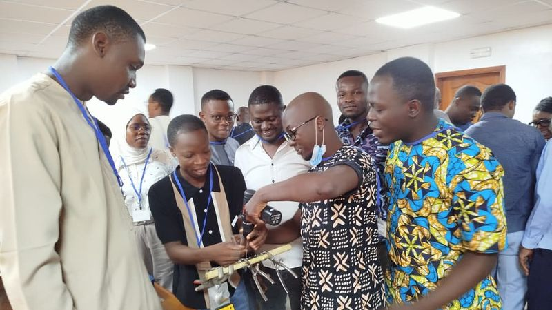
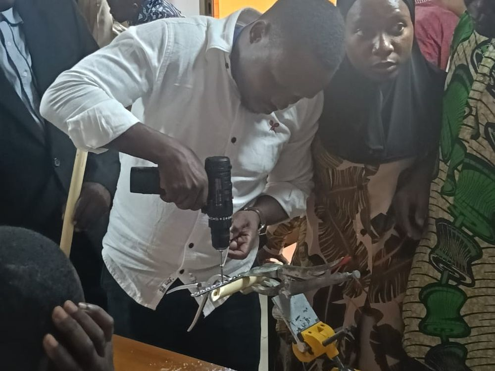
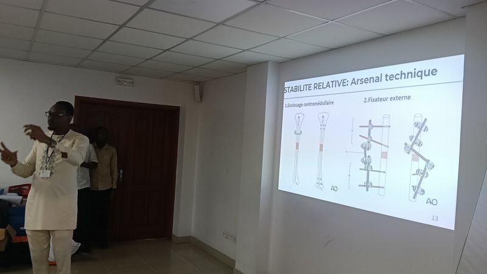
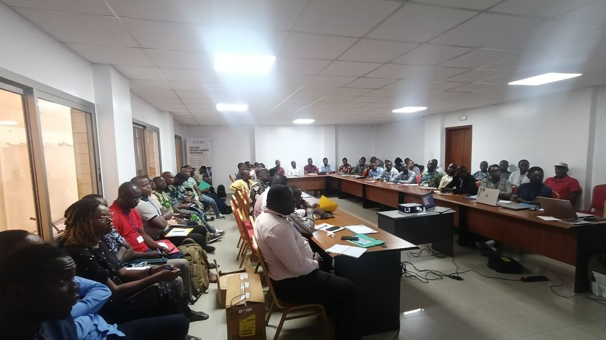

Séminaire AO Alliance · Cotonou, mai 2026Ostéosynthèse des fractures proximales du fémur
Yaoundé · [08–10 octobre 2026] · 3 jours · il reste [10] places
Chiffres indicatifs à remplacer par les données réelles de l’association.
Une fracture bien traitée,
c’est un travailleur
qui retourne au champ.
Au Cameroun, les traumatismes de la route et du travail frappent surtout des adultes jeunes. Entre une vie autonome et une invalidité durable, la différence se joue souvent dans un bloc de district. Notre travail consiste à y faire arriver la compétence, le matériel et les protocoles.
Cours & séminaires
Cours opératoires sur modèle osseux et pièce anatomique, séminaires thématiques et formation des personnels de bloc, encadrés par une faculty nationale.
Blocs de district
Instrumentation, stérilisation, protocoles écrits, maintenance et supervision des premières interventions dans les hôpitaux périphériques.
Savoir & mentorat
Recommandations adaptées au contexte, discussions de cas, publications et parrainage des jeunes chirurgiens en début d’exercice.
Prochaines sessions

ECMES : traiter la fracture de l’enfant sans grande chirurgie
L’embrochage centromédullaire élastique stable stabilise les fractures des os longs de l’enfant avec deux broches, une courte hospitalisation et peu de complications. Nous déployons la technique dans les hôpitaux régionaux, avec un suivi des premiers cas.
Ce que nous mettons
à disposition

Protocoles & recommandations
Fiches courtes validées par le conseil scientifique, pensées pour être affichées au bloc.

Bibliothèque de cas
Cas opérés dans les hôpitaux partenaires : imagerie, technique, suites, commentaire du formateur.

Publications
Articles, communications et posters signés par les membres de l’association.
Actualités
Toutes les actualitésRejoindre l’association
Chirurgiens, internes, infirmiers de bloc et instrumentistes : l’adhésion ouvre l’accès prioritaire aux sessions, aux ressources réservées et au réseau de mentorat.
Demander son adhésion